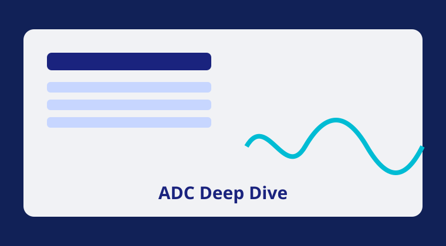
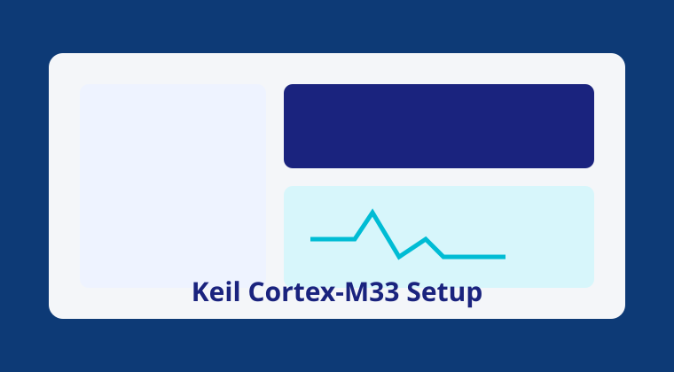
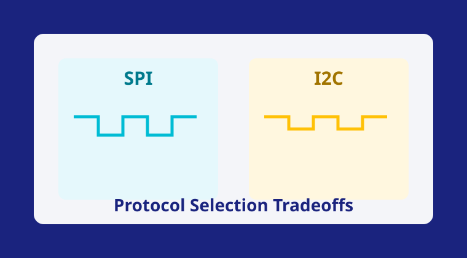

A Quarto-generated test post for verifying blog rendering, custom theme loading, callout styles, code blocks, and table formatting in the live website.
Read More →
Step-by-step environment setup covering startup files, linker scripts, flash settings, and J-Link integration for stable bring-up cycles.
Read More →
A design-oriented comparison of throughput, wiring complexity, addressability, and fault tolerance when selecting peripheral communication buses.
Read More →